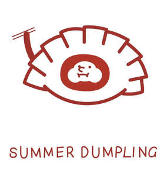

Trade Mark Journal No.2025/038 19 September 2025
UK00004215300 6 June 2025 (29,30,35,43)

- Class 29
- Potato-based dumplings; Noodle soup; Teriyaki chicken; Tofu burger patties; Soup; Pre-cooked soup.
- Class 30
- Dumplings; Jiaozi [stuffed dumplings]; Chinese stuffed dumplings (gyoza, cooked); Chinese stuffed dumplings; Jiaozi; Asian noodles; Noodles; Mooncakes; Rice cakes; Frozen pastry; Frozen pastry stuffed with meat; Frozen pastry stuffed with vegetables; Pelmeni [dumplings stuffed with meat]; Vareniki [stuffed dumplings]; Frozen pastry sheets; Deep frozen pasta; Shrimp dumplings; Flour-based dumplings; Chinese steamed dumplings (shumai, cooked); Dried and fresh pastas, noodles and dumplings; Rice dumplings; Frozen confectionery containing ice cream; Frozen prepared rice with seasonings and vegetables; Chinese noodles [uncooked]; Wontons; Chinese rice noodles (bifun, uncooked); Steamed buns stuffed with minced meat (niku-manjuh); Dried noodles.
- Class 35
- Marketing; Advertising and marketing; Advertising and marketing consultancy; Promotional marketing; Influencer marketing; Advertising and marketing services; Product marketing; Marketing consultancy; Marketing consulting; Digital marketing; Advertising, marketing and promotion services; Marketing, advertising and promotion services; Advertising, marketing and promotional services; Advertising, promotional and marketing services; Marketing, advertising, and promotional services; Marketing research; Online marketing; Internet marketing; Marketing services; Business marketing consultancy; Marketing forecasting; Marketing studies; On-line advertising and marketing services; Marketing analysis; Targeted marketing; Business marketing services; Marketing information; Direct marketing; Promotion, advertising and marketing of on-line websites; Marketing advice; Direct marketing consulting; Consultancy services relating to advertising, publicity and marketing; Marketing research services; Event marketing; Research services relating to advertising and marketing; Marketing assistance; Marketing management advice; Design of marketing surveys; Marketing agency services; Promotion [advertising] of business; Business marketing consulting services; Development of marketing concepts; Marketing research or analysis; Providing marketing consulting in the field of social media; Marketing (Business advice relating to -); Advertising and marketing services provided by means of social media; Advertising; Advertising and marketing services provided via communications channels; Analysis of marketing trends; Market research and marketing studies; Advertising planning; Marketing in the framework of software publishing; Advertising and promotion services; Advertising research; Advertising and publicity; Publicity and advertising; Advertising and promotional services; Promotional advertising services; Publicity and sales promotion; Advertising and publicity services; Advice relating to marketing management; Conducting of marketing studies; Telephone marketing services [not selling]; Advertising research services; Advisory services relating to marketing; Advertising and promotion services and related consulting.
- Class 43
- Fast-food restaurant services; Hotel restaurant services; Take-out restaurant services; Restaurant and bar services; Bar and restaurant services; Take-away restaurant services; Carvery restaurant services; Restaurant services; Ramen restaurant services; Salad bars [restaurant services]; Restaurant reservation services; Restaurants; Carry-out restaurants; Self-service restaurant services; Grill restaurants; Mobile restaurant services; Reservation of restaurants; Booking of restaurant seats; Serving food and drink for guests in restaurants; Catering in fast-food cafeterias; Serving food and drink in restaurants and bars; Restaurants (Self-service -); Self-service restaurants; Restaurant services for the provision of fast food; Tourist restaurants; Restaurant services incorporating licensed bar facilities; Bistro services; Fast food restaurants; Delicatessens [restaurants]; Providing food and drink for guests in restaurants; Provision of food and drink in restaurants; Providing restaurant services; Restaurant information services; Eateries; Providing food and drink in restaurants and bars; Restaurant services provided by hotels; Catering of food and drinks; Food and drink catering for banquets; Food and drink catering; Catering of food and drink; Catering (Food and drink -); Serving food and drink in doughnut shops; Brasserie services; Reservation and booking services for restaurants and meals; Cafe services; Hotel catering services; Food and drink catering for institutions; Agency services for reservation of restaurants; Providing food and drink in bistros; Hotel reservations; Takeaway food and drink services; Serving food and drink in Internet cafes; Take-away food and drink services; Food and drink catering for cocktail parties; Cocktail lounge buffets; Takeaway food services; Take-away food services; Serving food and drink for guests; Resort hotel services; Making reservations and bookings for restaurants and meals; Catering services for company cafeterias; Providing food and drink in doughnut shops; Serving food and drinks; Catering for the provision of food and drink; Café services; Hotel reservation services; Reservation of hotel accommodation; Hospitality services [food and drink]; Take-away fast food services; Providing reviews of restaurants and bars; Hotel services; Wine bar services; Hotel accommodation reservation services; Providing hotel and motel services; Pet hotel services; Providing food and drink catering services for exhibition facilities; Guesthouse; Providing room reservation and hotel reservation services; Corporate hospitality (provision of food and drink); Providing food and drink in Internet cafes; Beer bar services; Catering for the provision of food and beverages; Catering services for providing European-style cuisine; Snack bar services; Consultancy services in the field of food and drink catering; Providing reviews of restaurants; Catering services for the provision of food and drink; Catering services for providing Japanese cuisine; Club services for the provision of food and drink; Providing food and drink catering services for convention facilities; Rental of dishes; Coffee bar services; Night club services [provision of food]; Hotel room booking services; Providing food and drink for guests; Providing food and drink catering services for fair and exhibition facilities; Hotel accommodation services; Catering services for providing Spanish cuisine; Hookah bar services; Private members dining club services; Catering; Self-service cafeteria services; Cafeteria services.
summer dumpling ltd